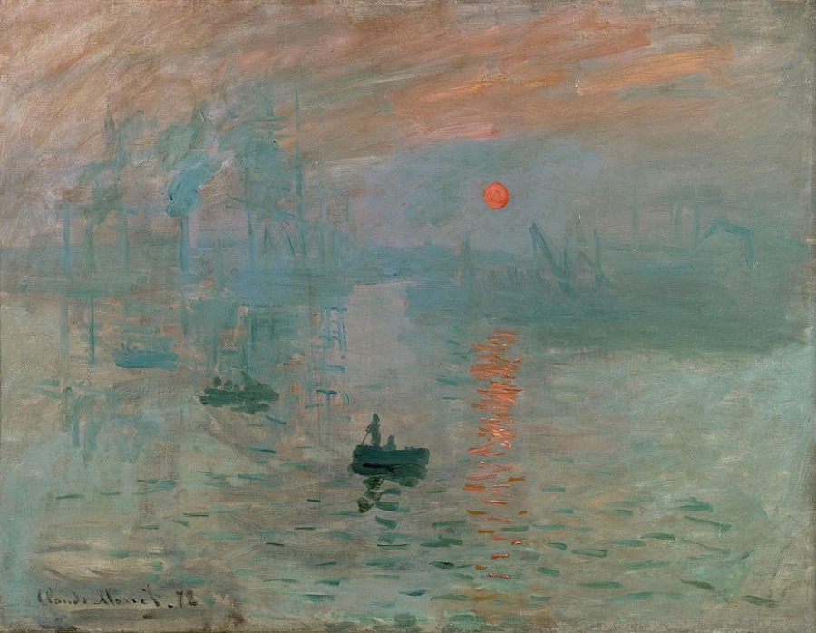
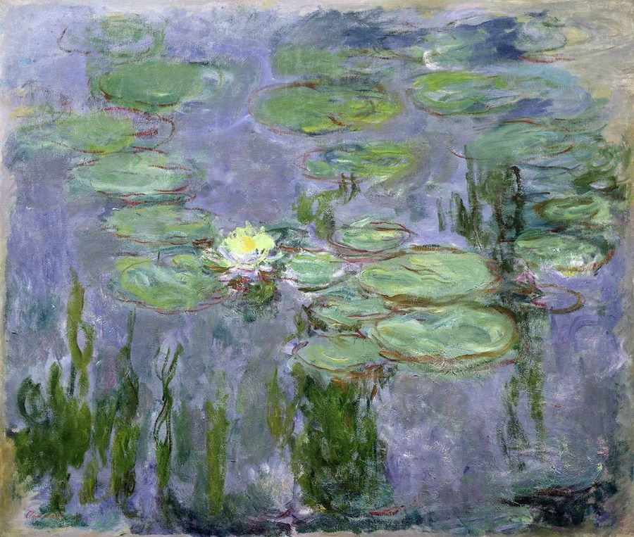
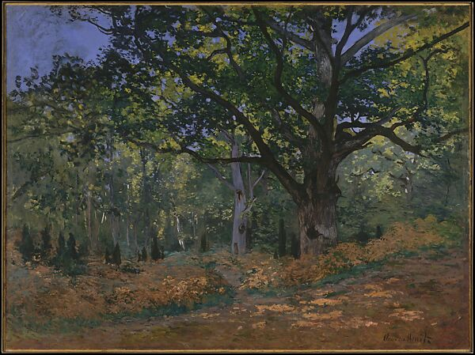
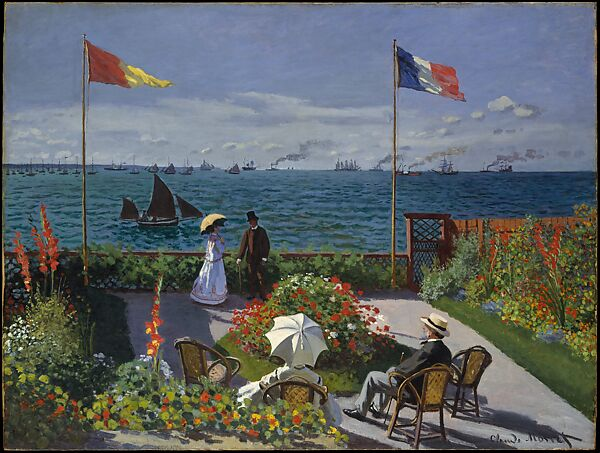
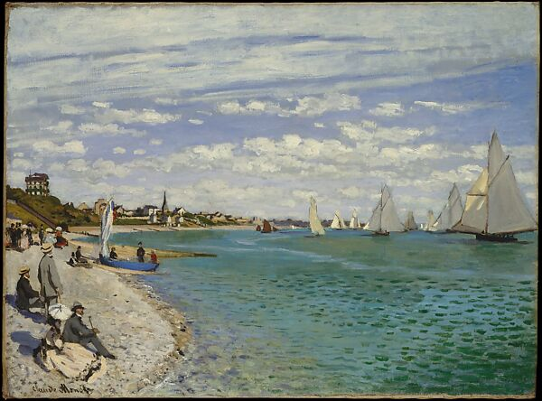
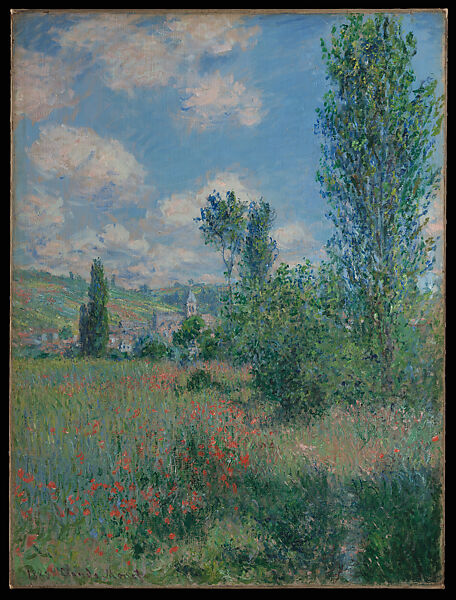
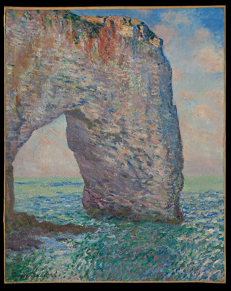
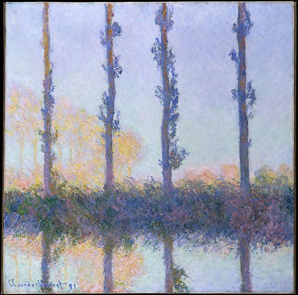

The Masterpieces of Claude Monet



Impression, Sunrise
Bridge over a Pond of Water Lilies
Camille Monet on a Garden Bench
The Frog Pond
Parasol
Saint-Lazare Station
San Giorgio Maggiore at Dusk

Water Lilies

The Bodmer Oak, Fontainebleau Forest

Garden at Sainte-Adresse

Regatta at Sainte-Adresse
The Parc Monceau

View of Vétheuil

The Manneporte near Étretat
Haystacks (Effect of Snow and Sun)

The Four Trees
“People discuss my art and pretend to understand as if it were necessary to understand when it’s simply necessary to love.” — Claude Monet
×